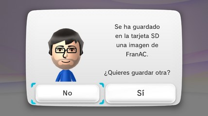
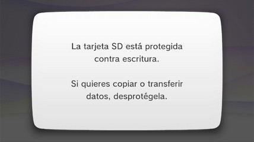
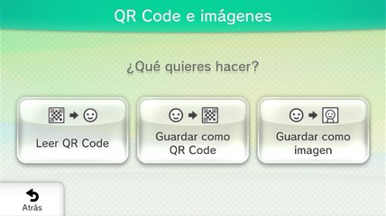
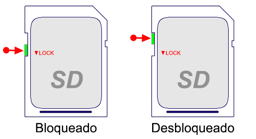
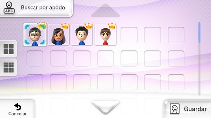
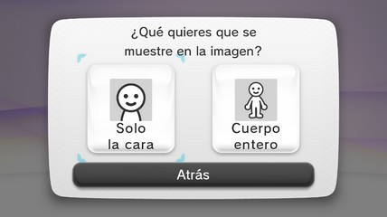
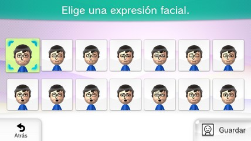

Como revisar que la Wii U puede escribir datos en la tarjeta SD
Primero asegúrate que la Wii U detecta la tarjeta SD, los pasos son muy similares, pero aquí es necesario guardar un Mii como imagen para asegurase que la Wii U puede escribir datos en la tarjeta SD.
Las tarjetas SD tienen un mecanismo que permite seguir leyendo datos, pero bloquear la escritura de nuevos datos. La Wii U puede estar detectando la tarjeta SD, pero al mismo tiempo puede no lograr escribir datos en la tarjeta SD.
Instrucciones
- Con la consola apagada y la tarjeta SD introducida en el puerto SD de la Wii U enciende la consola, accede al menú de Wii U y abre el Editor de Mii.
- Si cargó el Homebrew Launcher presiona el botón HOME del GamePad de la Wii U. Si no cargó el Homebrew Launcher, no te preocupes, pasa al siguiente paso.
- Dentro del Editor de Mii toca en QR Code e Imágenes.
- Toca en Guardar como imagen.
- Si la consola te pide elegir un Mii para guardarlo como imagen toca en Aceptar.
- Elige un Mii, toca en Guardar.
- Toca en Solo la cara.
- Elige una expresión facial y toca en Guardar.
- La consola puede escribir datos en la tarjeta SD si muestra el mensaje: "Se ha guardado en la tarjeta SD una imagen de… ¿Quieres guardar otra?".

Toca en No y luego toca en Salir para regresar al menú de Wii U. - La consola no puede escribir datos en la tarjeta SD si muestra el mensaje: "La tarjeta SD está protegida contra escritura. Si quieres copiar o transferir datos, desprotégela.".

Presiona el botón A para salir. Quédate en la pantalla QR Code e Imágenes.
Expulsa la tarjeta SD y comprueba si la tarjeta SD está bloqueada o desbloqueada.
Vuelve a introducir la tarjeta SD en el puerto SD de la Wii U y repite del paso 4 en adelante. - Si no logras que la consola escriba datos en la tarjeta SD entonces prueba con otra tarjeta SD (o con otro adaptador de microSD a SD), si la consola no puede escribir datos en ninguna tarjeta SD entonces es posible que el mecanismo de la Wii U que detecta el bloqueo de la tarjeta SD se encuentre dañado, en ese caso debes llevar la consola con un técnico para que la revise.




